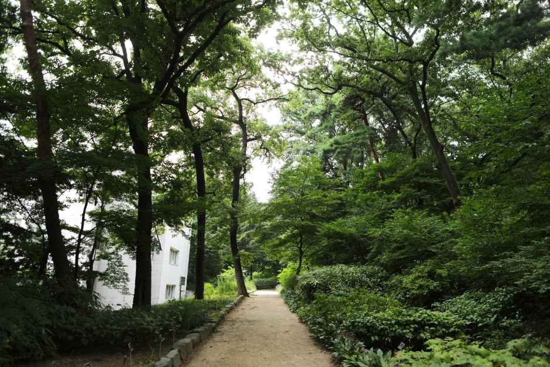
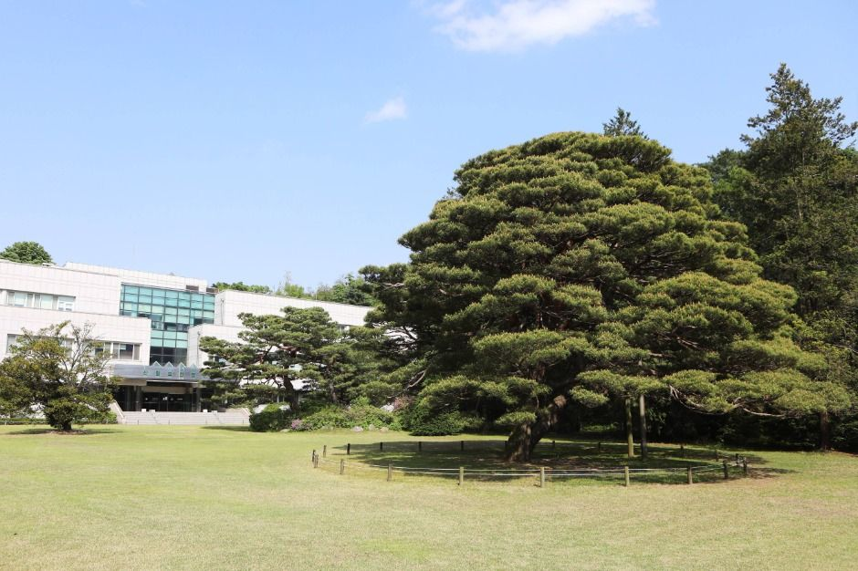
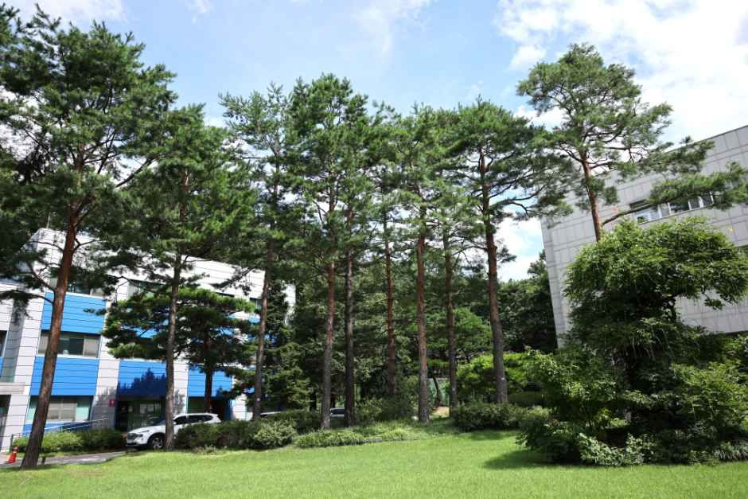
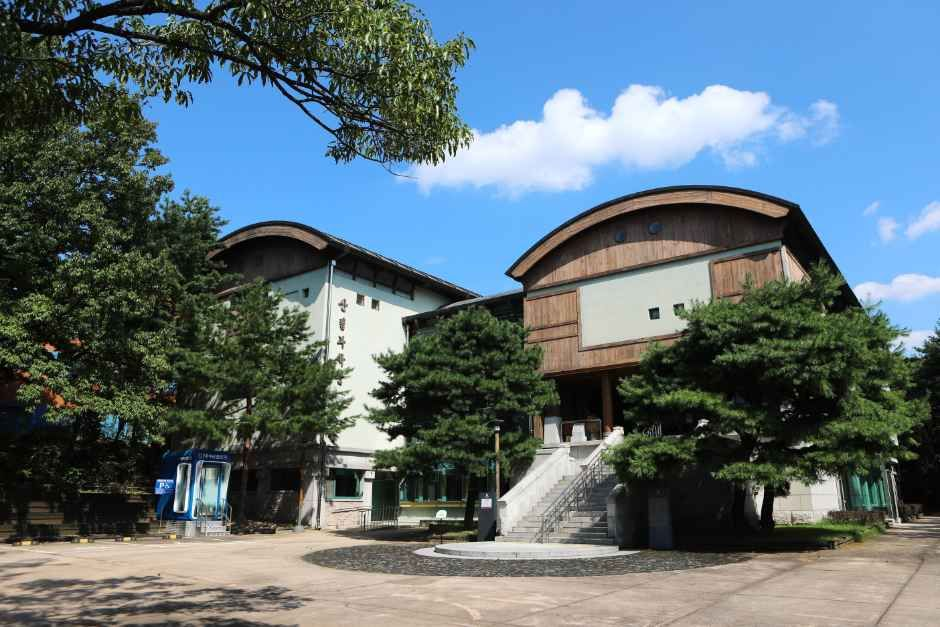
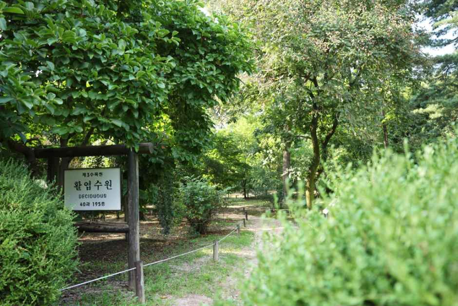

Hongneung Forest Guide: Overview
This Hongneung Forest guide covers one of Seoul's quietest green escapes, and one of the few that most tourists never hear about. Hongneung Forest (홍릉숲) is the research forest of the National Institute of Forest Science in Dongdaemun-gu, northeast Seoul. It's Korea's first arboretum, and it's free to visit.
The forest covers about 41.8 hectares on the southwest slope of Cheonjangsan, a low 141m hill. Tall pines, labeled trees and calm gardens make it feel far from the city, even though it's only a short walk from the subway.

A Short History: From Royal Tomb to Research Forest
The name comes from Hongneung, the original tomb site of Empress Myeongseong, the last queen of the Joseon era. Her tomb was later moved, but the name stayed. In 1922 the Forestry Experiment Station was set up here, and the arboretum became Korea's first. It opened to the public on weekends in 1993, and since March 28, 2026 visitors can also walk in on weekdays without booking. Today it holds about 2,035 plant species and is still used for school nature classes.


What to See: Gardens and the Forest Trail
The arboretum is split into conifer, broadleaf, herbaceous and shrub gardens, with name labels on many trees. The main forest trail runs from the old Hongneung tomb site to a rest area and then the main building. It's about 700m and takes around 20 minutes, but most people wander longer. Spring blossoms and autumn leaves are the busiest times; early November is often a good time for fall color.



Visitor Information
| Item | Details |
|---|---|
| Name | Hongneung Forest (홍릉숲) · National Institute of Forest Science |
| Address | 57 Hoegi-ro, Dongdaemun-gu, Seoul (서울 동대문구 회기로 57) |
| Open | Tuesday–Sunday for free exploration |
| Hours | Weekdays 10:00–17:00 · Weekends 09:00–17:00 (last entry 30 minutes before closing) |
| Closed | Mondays, Jan 1, Seollal and Chuseok holidays |
| Subway | Line 6 Korea Univ. Stn Exit 3 (7 min walk) · Line 1 Cheongnyangni Exit 2 (15 min) · Hoegi Exit 1 (17 min) |
| Bus | No. 273 to 국방연구원 앞 · No. 201 to 세종대왕기념관 앞 |
| Parking | None for visitors |
| Guided tours | Forest interpreter programs, booked online in advance |
| Admission | Free |
| Phone | +82-2-961-2521 (National Institute of Forest Science) |
Sources: National Institute of Forest Science (국립산림과학원), Visit Seoul and Korea Tourism Organization (한국관광공사). Photos © Korea Tourism Organization. We didn't add any AI-generated images. Hours and rules may change, so check before you go.
Rules and Tips for Your Visit
- Not allowed: pets, food, alcohol, picnic mats, tripods, bicycles, exercise gear, smoking and picking plants.
- Bring a water bottle and eat before or after; there are plenty of cafés and restaurants near Korea University and Cheongnyangni.
- Come on a weekday morning for the quietest walk. Avoid Mondays.
- Wear comfortable shoes: some paths are unpaved and gently sloped.
- Combine it with the nearby Sejong the Great Memorial Hall or Cheongnyangni Market for a half-day in northeast Seoul.
Hongneung Forest vs. Other Seoul Green Spaces
| Hongneung Forest | Seoul Forest | Seoul Botanic Park | |
|---|---|---|---|
| Area | Dongdaemun-gu (northeast) | Seongdong-gu (east) | Gangseo-gu (west) |
| Feel | Quiet research forest | Busy city park | Garden + big greenhouse |
| Fee | Free | Free | Outdoor free; greenhouse ticketed |
| Food & pets | Not allowed | Allowed in many areas | Limited |
| Best for | Peaceful tree walks | Picnics, dogs, deer | Rainy or cold days |
Pros & Cons
✅ Pros
- Free, quiet and very green, with Korea's oldest arboretum.
- Close to Line 6 and Line 1 stations.
- Labeled trees make it a living lesson for families and plant lovers.
- Great autumn leaves without big crowds.
⚠️ Cons
- Closed on Mondays and major holidays.
- No food, pets, picnic mats or tripods.
- No visitor parking.
- No food allowed inside: plan meals nearby.
Who It Suits
- Great for: Travelers who want a quiet nature walk without leaving Seoul.
- Great for: Families, students and anyone curious about Korean trees.
- Great for: Photographers who like forests (handheld only; no tripods).
- Less ideal: If you want a picnic, a dog walk or a big park with facilities.
Book Your Seoul Trip
Hongneung Forest FAQ
What is Hongneung Forest?
Hongneung Forest (홍릉숲), also called the Hongneung Experimental Forest, is a research forest run by the National Institute of Forest Science in Dongdaemun-gu, Seoul. It's Korea's first arboretum, dating back to the 1922 Forestry Experiment Station.
When is Hongneung Forest open, and is it free?
Admission is free. Since March 28, 2026 it's open without booking Tuesday to Sunday: 10:00–17:00 on weekdays and 09:00–17:00 on weekends, with last entry 30 minutes before closing. It's closed on Mondays, January 1, and the Seollal and Chuseok holidays.
How do I get to Hongneung Forest?
Take Seoul Subway Line 6 to Korea University Station, Exit 3, and walk about 7 minutes (0.5km). You can also walk about 15 minutes from Cheongnyangni Station, Exit 2. There's no visitor parking.
Can I bring food or a dog?
No. Pets, food, alcohol, picnic mats, tripods, bicycles and exercise gear aren't allowed, and you can't pick plants. It's a research forest, so treat it like a quiet museum of trees.
Are there guided tours?
Yes. Forest interpreters run guided programs that you book online in advance. They may be cancelled if fewer than 4 people sign up, so check the National Institute of Forest Science website.